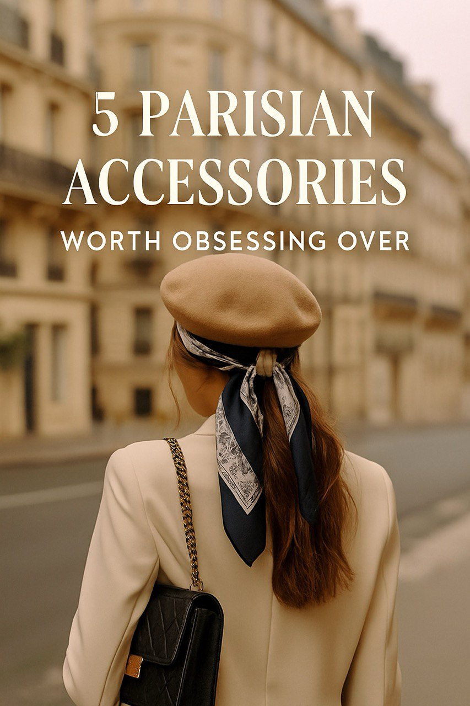
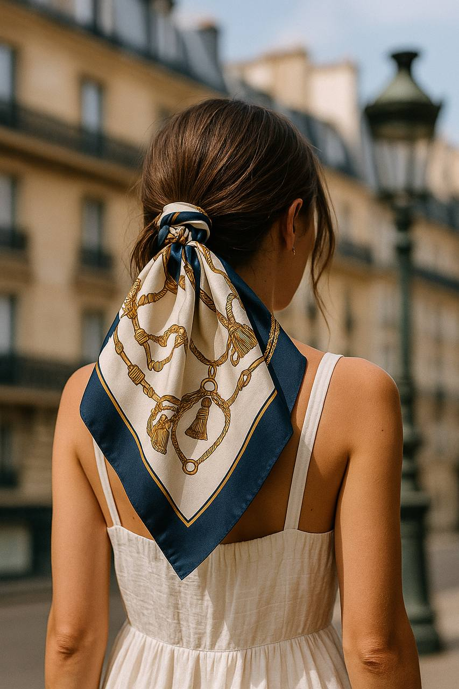
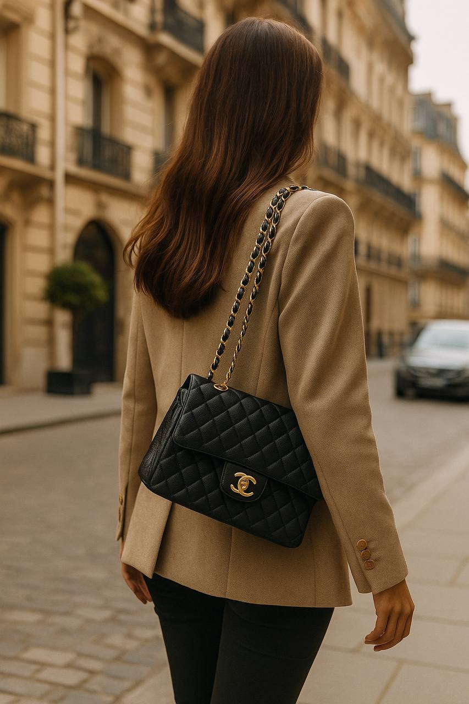
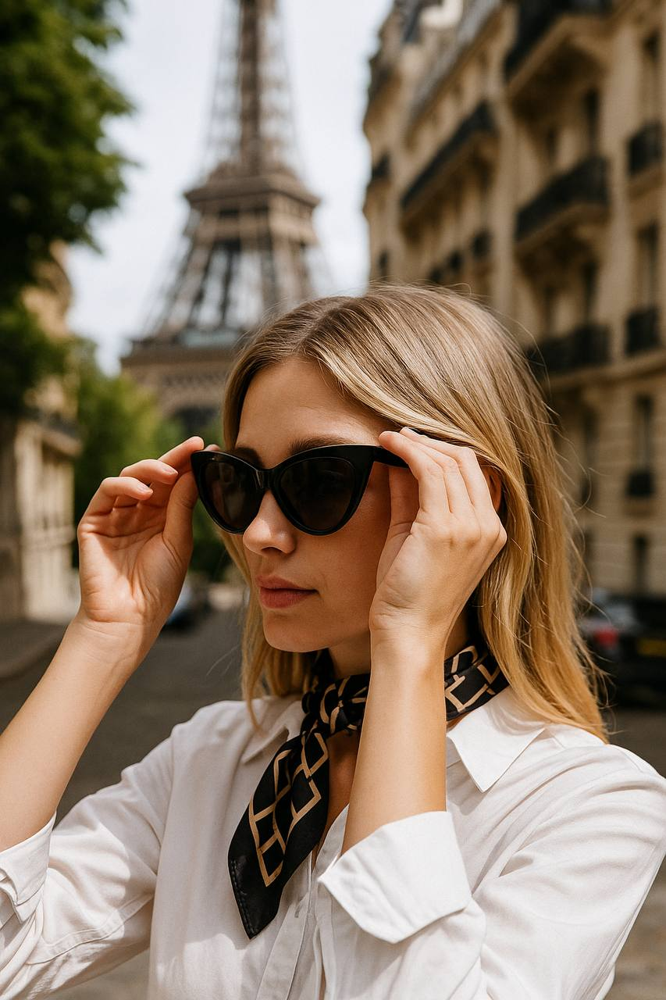
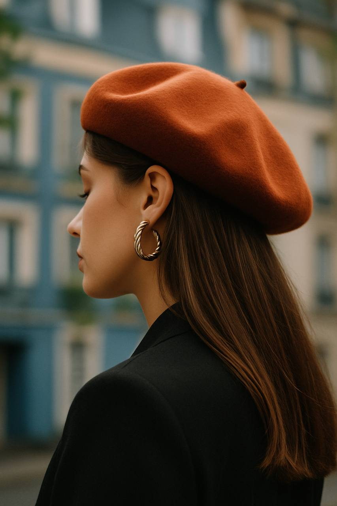
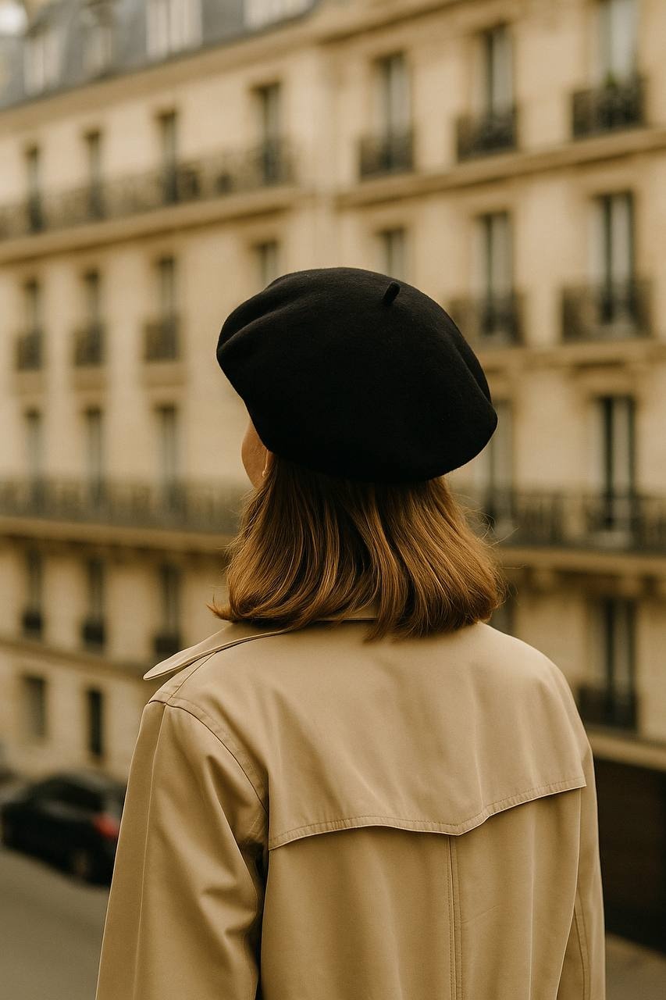

5 Parisian Accessories Worth Obsessing Over
From effortless elegance to bold statement pieces, Paris knows how to dress an outfit from the top down — literally.
Whether you're strolling through Le Marais or heading to a rooftop café, these five accessories are the essence of Parisian chic. And yes, we've linked our faves so you can get the look yourself.
1. The Timeless Silk Scarf
No Parisian wardrobe is complete without a silk scarf. Tie it around your neck, your wrist, your bag — or your wine bottle. It instantly adds sophistication and subtle color. Opt for vintage prints or bold modern patterns.
2. Mini Leather Crossbody
The only bag you'll ever need. It’s tiny, structured, and slings across your body like it was made for you. Perfect for markets, museums, or losing yourself in Montmartre.
3. Oversized Sunglasses
Mysterious. Dramatic. Useful when avoiding your ex in Saint-Germain. Oversized frames never go out of style, and in Paris, they’re a power move.
4. Gold Hoop Earrings
Not too big, not too small. Just enough to make a statement while ordering croissants. Gold hoops are the universal sign of confidence — Paris just wears them better.
5. The Statement Beret
Yes, it's cliché. And yes, it's fabulous. A bold-colored beret says, “I’m here to flirt with the entire arrondissement.” Pair it with neutrals to let it pop.
How to Style Them in Real Life
The magic of these accessories? You can wear them anywhere — not just in Paris. Try the scarf with a white T-shirt and jeans in Barcelona. Or the hoops with a black slip dress in NYC. These aren’t just French pieces — they’re global essentials.
Final Thoughts
Feeling inspired? That’s Paris for you. It doesn’t shout style — it whispers it with a knowing smirk. Add any of these pieces to your look, and suddenly, you’re not just dressing — you’re making a statement.
← Back to Articles